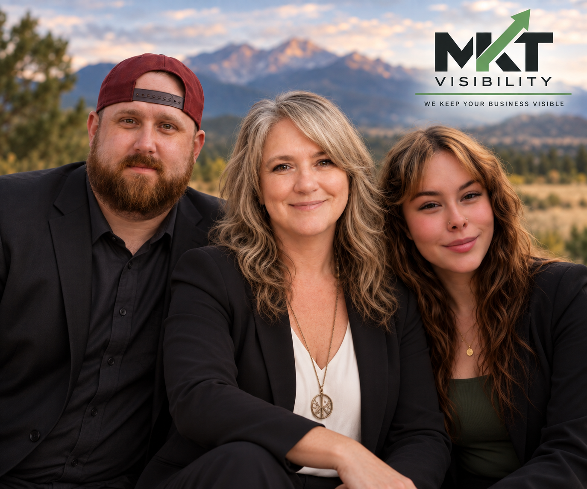

Why MKT Colorado
MKT Colorado began in 2026 as an idea to create one place where people could discover and share the things that make communities across Colorado worth exploring.
In September 2026, an unexpected corporate layoff changed my direction. It gave me the desire to take what I had learned throughout my working years and use that experience to help small businesses. Owning a business and working for myself had also been a dream of mine for a long time.
Instead of simply moving on to another corporate position, I partnered with my son Tim Skolyak and Kayli Elliott to start MKT Visibility, a family-owned marketing business focused on helping small businesses get noticed, connect with customers and grow.
MKT Colorado grew from that same belief: communities are stronger when local businesses are visible, people support one another and residents and visitors have an easy way to discover what makes each Colorado town unique.